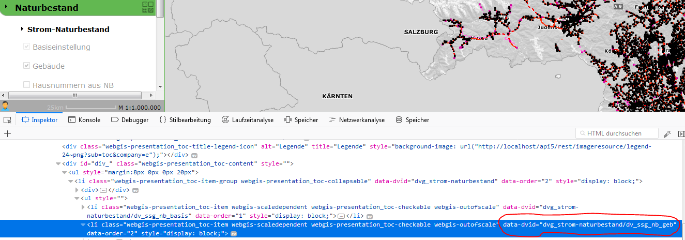

Url Parameter¶
Optional zum normalen Aufruf können noch Parameter übergeben werden:
https://{Host}/{Portal-Applikation}/{Aortal-Seite}/{Kategorie}/{Kartenname}?param1=1¶m2=2
Kartenausschnitt und Marker¶
Parameter:
bboxGibt eine Bounding-Box an, auf die Kartenansicht automatisch zoomt. Die Syntax lautet hier: [x-min],[y-min],[x-max],[y-max] bzw. bei geographischen Koordinaten [lng-min],[lat-min],[lng-max],[lat-max] wobei „lng“ für den geographischen Längegrad und „lat“ für den geographischen Beitengrad stehen. Die Werte werden mit Beistrich getrennt. Als Kommazeichen für die einzelnen Werte wird ein „.“ vorausgesetzt.
Beispiel:
&bbox=14.6,47.3,15.2,48.1centerGibt das Zentrum an, auf das nach dem Start in der Kartenansicht gesprungen wird. Die Syntax lautet hier: [x],[y] bzw. [lng],[lat]
Die Werte werden mit Beistrich getrennt. Als Kommazeichen für die einzelnen Werte wird ein „.“ vorausgesetzt.
Beispiel:
¢er=14.6,47.3Wird kein Maßstab angeben (Parameter scale), zoomt die Ansicht auf einem Maßstab 1:1000
srsDer Viewer setzt voraus, dass die Koordinaten für
bboxundcenterals geographische Koordinaten in WGS 84 übergeben werden. Ist dies nicht der Fall muss das Koordinatensystem über diesen Parameter spezifiziert werden. Übergeben wird hier der EPSG-Code des Koordinatensystems ohne dem „EPSG:“ Literal, also als Integer Zahl.Beispiel (GK-M34):
&srs=31256scaleGibt den Maßstab an, auf dem in der Kartenansicht gezoomt wird. Der Parameter wird nur berücksichtigt, wenn auch die Parameter
centerodermarkerübergeben werden.markerSoll ein Punkt in der Karte mittels Marker dargestellt werden, kann der Marker über diesen Parameter definiert werden. Hier wird als Syntax ein Javascript Objekt mit entsprechenden Eigenschaften übergeben.
Beispiel (mind):
&marker={lng:14.7,lat:47.2}Das Objekt wurd durch geschwungen Klammern abgegrenzt. Die einzelnen Eigenschaften des Objekts werden mittels Beistrich voneinander getrennt. Die Zuweisung einer Eigenschaft folgt mit folgender Syntax: [Eigenschaft]:[Wert] also beispielsweise lng:14.2
Enspricht der Wert einem String muss dieser in einfachen Hochkommata angeführt werden:
Text:‘Popup Text‘
Eine Beschreibung der einzelnen Werte folgt unten.
Wenn nicht über die Parameter center oder bbox anders definiert, zoomt die Kartenansicht auf den Marker. Der Maßstab kann dafür über den Parameter scale übergeben werden.
Marker übergeben¶
Wie oben schon beschrieben kann über den Parameter marker ein Marker beim Aufruf in eine Karte übergeben werden. Die Übergabe Syntax ist dabei immer die Darstellung des Markers als Javascript Objekt (siehe oben). Folgende Tabelle führt alle möglichen Eigenschaften dieses Objekts an. Double-Werte sind immer Zahlen mit einen „.“ (Punkt) als Komma Separator. Integer Zahlen dürfen nur aus Zahlen bestehen. Strings müssen mit Hochkommata versehen werden. Die fett gedruckten Eigenschaften müssen angeführt werden:
lngDouble
Der geographische Längengrad, an dem der Marker eingefügt werden soll
latDouble
Der geographische Breitengrad, an dem der Marker eingefügt werden soll
xDouble
Falls die Übergabe der Koordinaten nicht in geographischen Koordinaten erfolgt, können hier die X,Y Koordinaten und die Koordinatensystem (als EPGS-Wert) übergeben werden. Werden diese Werte angeführt, sind lng und lat keine Pflichtfelder mehr.
yDouble
Falls die Übergabe der Koordinaten nicht in geographischen Koordinaten erfolgt, können hier die X,Y Koordinaten und die Koordinatensystem (als EPGS-Wert) übergeben werden. Werden diese Werte angeführt, sind lng und lat keine Pflichtfelder mehr.
srsInteger
Falls die Übergabe der Koordinaten nicht in geographischen Koordinaten erfolgt, können hier die X,Y Koordinaten und die Koordinatensystem (als EPGS-Wert) übergeben werden. Werden diese Werte angeführt, sind lng und lat keine Pflichtfelder mehr.
iconString
(zZ nicht benutzt, es wird immer der Standardmarker gesetzt)
textInteger
Soll der Marker Information in Form von Text besitzen, kann dies über diesen Parameter erfolgen. Der Text wird dann als Popup Text beim Klick auf den Marker angezeigt.
Innerhalb des des Textes können auch Links auf Bilder angeführt werden. Bilder werden mit einem „img:“ als Prefix gekennzeichnet, also Beispielsweise img:http://…../bild.jpg
openPopupBoolean
true/false
Wird ein Text übergeben, kann hier angeführt werden, ob der Popup Text automatisch dargestellt wird oder erst durch einen Klick auf den Marker durch den Anwender.
Beispiele:
Ein Marker mit dem Text „Hallo Welt“
&marker={lng:14.7,lat:47.2,text:‘Hallo Welt‘}
Ein Marker mit projezierten Koordinaten:
&marker={x:-68014.6,y:215601.4,srs:31256}
Ein Marker mit Text und eingeschlossem Bild. Wird nach dem Öffnen des Viewers automatisch angezeigt (openPopup=true). Die Zeilenumbrüche dienen hier nur der Veranschaulichung:
&marker={
lng:15.4,
lat:47.09,
openPopup:true,
text:
‘Das ist ein Bild img:https://upload.wikimedia.org/wikipedia/de/6/68/Nandu_gesamtes_Bild.jpg mit Subtext‘
}
Abfragen¶
An den Viewer kann beim Aufruf eine Abfrage mit Werten übergeben werden. Diese Abfrage ist dann automatisch im Viewer als aktuelles Abfrage/Identifythema aktiv. Wenn optional noch Werte übergeben werden, wird diese Abfrage ausgeführt und auf die Ergebnisse gezoomt. Ergebnisse werden im der Karte selektiert und mit Markern markiert.
query, abfragethema
Beide Parameter sind möglich, die Funktionsweise ist gleich. Übergeben wird die Abfrage-Url, wie sie im CMS festgelegt wurde.
Beispiel:
&query=gemeindenAbragewerte: name, plz, str, hnr, …
Die Abfragewerte heißen so, wie sie im CMS definiert wurden
Sichtbarkeit/Darstellungsvarianten¶
Um beim Aufruf schon eine bestimmte Darstellung anzugeben, kann hier eine Liste von Darstellungsvarianten angeführt werden. Diese werden dann in der angeführten Reihenfolge „automatisch angeklickt“. Im CMS hat jede Darstellungsvariante beim Dienst eine Url. Im Viewers können diese Darstellungsvarianten allerdings wieder zu Buttons und Checkboxes gruppiert sein, oder sich in Dropdowns befinden. Darum funktioniert die Übergabe der Url einer Darstellungsvariante nur, wenn diese in keiner Gruppe ist. Wenn sich die Darstellungsvariante in einer Gruppe befindet, kann nur die komplette Gruppe als Parameter übergeben werden. Die interne Url für eine Gruppe ist immer dvg_[Name der Gruppe in Kleinbuchstaben, Leerzeichen werden Underscore, …). Wenn man sich nicht sicher ist, wie der interne Name einer Gruppe oder einer Darstellungsvariante unterhalb eines Dropdowns oder einer Gruppe ist, kann dies über die Entwicklungstools des Browsers feststellen (F12). Jedes Element, auf das man in Darstellungsvarianten TOC klicken kann hat ein Attribut mit dem Namen „data-dvid“. Der Wert dieses Attributes entspricht der Id, die man über einen parametrierten Aufruf übergeben kann:
presentation, darstellungsvariante
Beide Parameter sind möglich, die Funktionsweise ist gleich.
Beispiel:
&presentation=dvg_strom-naturbestand/dv_ssg_nb_geb,dvg_kataster